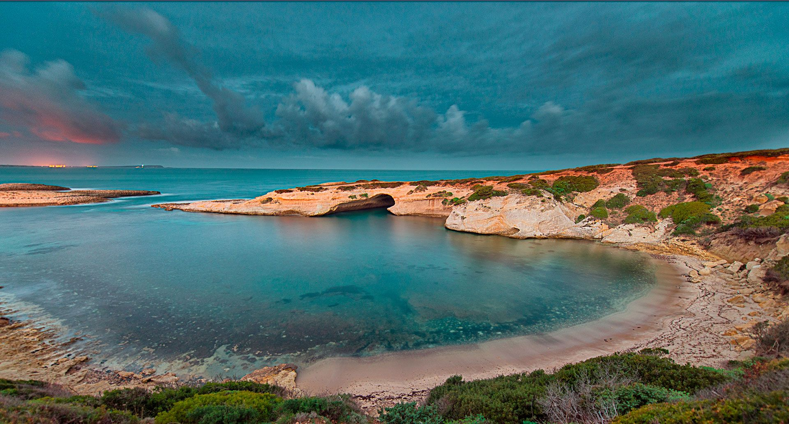

Visit Sinis_Sardegna

Penisola del Sinis
La penisola del Sinis è situata nella costa ovest della Sardegna estesa per 26 mila ettari nel
territorio di Cabras.
Geologicamente il Sinis è per la maggior parte un'area alluvionale ricolmata dai sedimenti provenienti dall'erosione del vicino Montiferru.
La raccolta di detriti ha portato ad unire alla terraferma le zone più a nord-ovest e a sud-ovest della penisola che erano quasi sicuramente degli isolotti separati
dalla Sardegna.
A testimonianza di questo antico arcipelago è presente, a poche miglia marine ad Ovest del Sinis, la minuscola isola di Mal di Ventre o "malubentu"in sardo.
Morfologicamente il Sinis è composto da due zone:
- una parte pianeggiante, che si estende soprattutto nella parte orientale e settentrionale, caratterizzata dalla presenza di numerosi stagni e paludi
- l'altopiano, nella parte centro-meridionale della penisola, raggiunge una massima elevazione di oltre 90 metri con una media di circa 60 metri
Le spiagge
- San giovanni di Sinis
- Mari Ermi
- Is Arutas
- Putzu Idu
Sito archeologico di Tharros
Tharros è un sito archeologico della provincia di Oristano, situato nel comune di Cabras, in Sardegna.
La città si trova nella parte sud della penisola del Sinis,
che termina nella sporgenza montuosa di
capo San Marco
"Visita gli scavi"